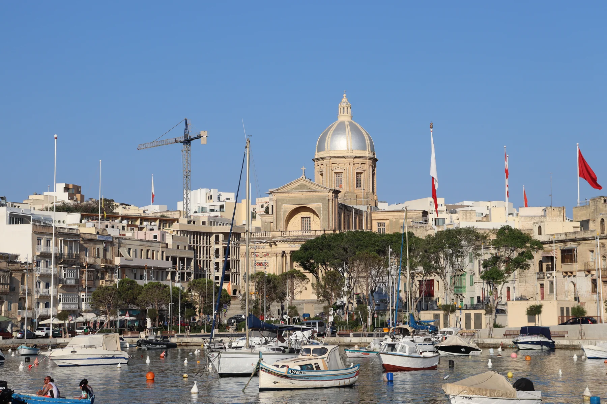

The inventory shows a shared locality centroid, not the building. It cannot establish a creek view, waterfront position, parking arrangement, nearest stop or entrance.

IL-KALKARA · PORT REGIONCreek edge.
Creek edge.
Harbour layers.
Kalkara brings together an old waterfront, a lived-in centre, Bighi, Rinella and newer eastern development. The locality name cannot tell you which setting, street level or approach belongs to a home.
READ THE ADDRESS
One locality, distinct edges.
Kalkara Creek, the centre, Bighi, Rinella Bay and SmartCity do not work as one interchangeable waterfront. Confirm the full address, entrance level, street approach and permitted route before planning a viewing.
A short straight line across Kalkara Creek or the Grand Harbour is not a walking route. Use real roads and keep ferries, buses, driving and walking as separate modes.
Birgu, Bormla, Isla, Xgħajra, Żabbar, SmartCity and Rinella are not synonyms for Kalkara centre. Check the actual locality and side of the harbour.
A working creek, not a promise.
The current Kalkara heritage trail records the creek's fishing and boat-building associations and distinguishes the waterfront from the wider locality. That supports place context, but not a guaranteed view, berth, quiet street or waterside walk from a listed home.
Kalkara heritage trail ↗History across several sites.
The Archdiocese documents today's St Joseph parish church, while Heritage Malta publishes the current regeneration context for Villa Portelli and its gardens. Access and opening arrangements belong on the live source pages.
Heritage Malta — Villa Portelli ↗EVERYDAY CHECKS
Build the viewing around live information.
These operator pages help structure a visit. They do not rank services or prove which option is nearest to a particular home. Recheck stops, hours, access and the real street route on the day.
Route 3
Malta Public Transport currently lists Kalkara, Rinella and SmartCity stops on this route. Timings and the best stop stay on the live timetable.
Current Route 3 ↗Route 213
The operator currently shows the Kalkara/Isla corridor on Route 213. This is scheduled service, not a fixed end-to-end time for a listing.
Current Route 213 ↗Brown's Kalkara
The operator identifies its branch at Misraħ l-Arċisqof Gonzi. Recheck current hours and duty coverage before relying on it.
Operator page ↗Verify on the street.
No specific grocery operator has yet cleared the source standard for this edition. Confirm today's options and the actual route during the viewing.
TWO SIDES, NO RANKING
Waterfront and SmartCity examples.
These are current operator examples in different parts of the locality context. They do not establish what is closest to a home, and they carry no “best of” claim. Menus, prices, hours and reservations remain on the live sites.
CUBA Shoreline
The operator identifies its Shoreline restaurant in Kalkara. It appears as an eastern-side example, not a centre-of-village or proximity claim.
CUBA Shoreline operator page ↗Chocafé
The operator identifies a café-bistro at SmartCity, Kalkara. It appears as a geographically separate example, not a centre-of-village claim.
Chocafé operator site ↗The harbour is not a shortcut.
This preview draws no route. Straight lines towards Birgu, Valletta or another waterfront can cross water, fortifications or inaccessible land. Any future itinerary must name real endpoints, use routed geometry, identify the transport mode and label a ferry segment only when an official operator source proves it.
Open the harbour-side overview only when needed.
The map frames Kalkara and surrounding place labels for orientation. It deliberately draws no council boundary, property pin, route, straight line, ferry crossing, distance or travel time and loads from OpenStreetMap only after your click.
Local Government — Port Region · Kalkara heritage trail · Archdiocese of Malta · Heritage Malta — Villa Portelli · Esplora · Fort Rinella · Animal Welfare Directorate — Rinella Bay designation · Malta Public Transport Route 3 · Route 213 · Medicines Authority · CUBA Shoreline · Chocafé
Neighbourhood edition. No ranking, fixed opening hour, menu, property-specific distance, guaranteed view, parking claim, accessibility promise, grocery proximity, route or journey time is implied.
Continue with the Ħaż-Żabbar, Valletta, Żejtun and Marsaskala editions, or return to all neighbourhoods.